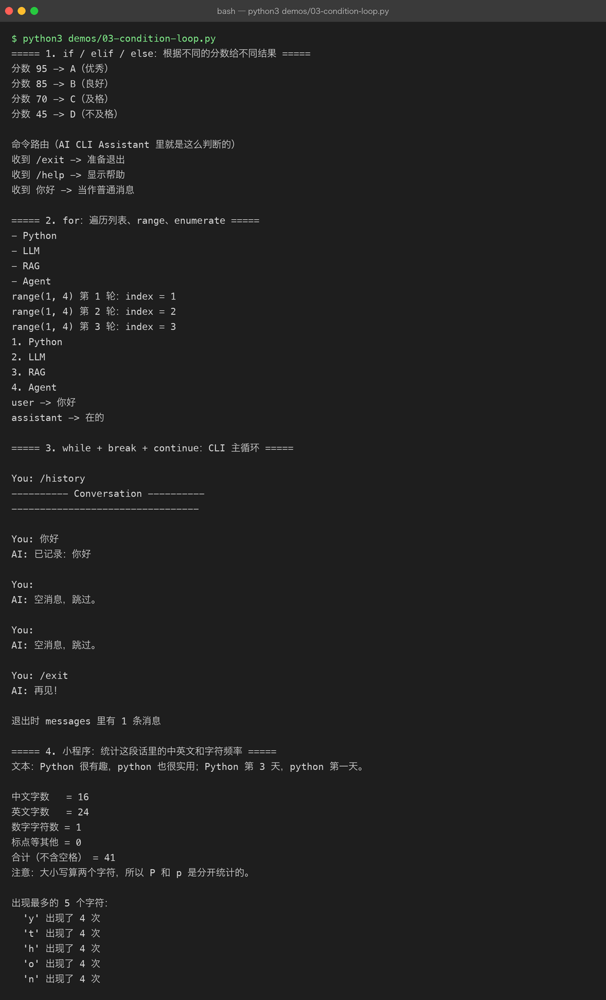
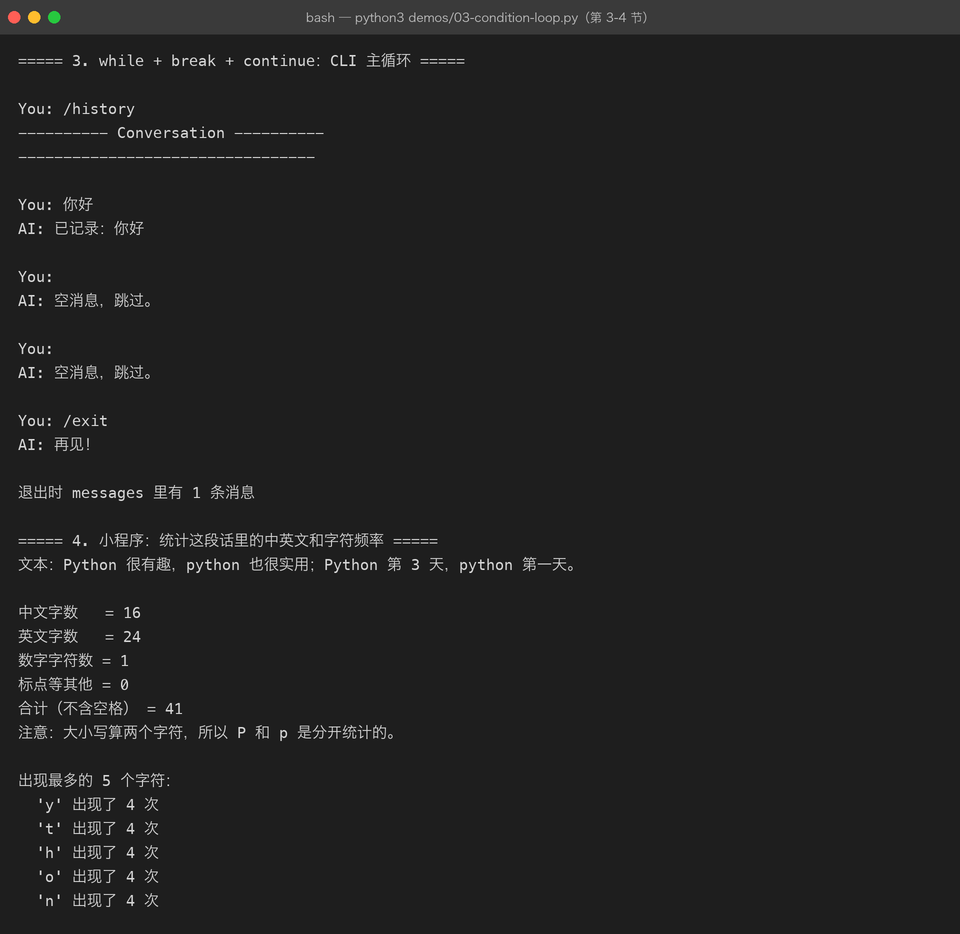

Lesson 03 — Condition / Loop：让 AI CLI Assistant 开始运行起来
AI Engineer Journey · Project 01 — Python AI CLI Assistant 学习方式：Project-Based Learning【项目驱动学习】 本章主线项目：Python AI CLI Assistant 本章目标：使用
if / for / while让程序具备持续运行、判断命令和遍历消息的能力。
1. 这一章我们要做什么？
上一章我们已经可以创建：
messages = [
{
"role": "system",
"content": "你是一名 Python 教师"
},
{
"role": "user",
"content": "什么是 dict？"
}
]我们已经解决了：
一条消息怎么保存？
多条消息怎么保存？
怎么保存聊天历史？
怎么保存成 JSON？但是现在这个程序还有一个非常明显的问题：
它不会真正“运行起来”。
例如：
You: 你好程序处理一次之后就结束了。
真正的聊天程序应该是：
启动
↓
等待用户输入
↓
判断用户做什么
↓
处理
↓
继续等待
↓
继续处理
↓
直到用户退出所以这一章我们要解决：
程序什么时候执行？
程序应该执行什么？
程序什么时候重复？
程序什么时候停止？于是自然遇到：
if → 判断
for → 遍历
while → 持续运行
break → 退出循环
continue → 跳过本次循环2. 先看最终项目
本章完成后的：
Python AI CLI Assistant v0.3
支持：
/help
/history
/clear
/exit例如：
$ python main.py
====================================
AI Engineer CLI Assistant
输入 /help 查看帮助
====================================
You: 你好
AI: 我收到你的消息了。
You: 我正在学习 Python
AI: 已记录你的学习内容。
You: /history
========== Conversation ==========
user: 你好
assistant: 我收到你的消息了。
user: 我正在学习 Python
assistant: 已记录你的学习内容。
===================================
You: /clear
AI: 聊天记录已清空。
You: /exit
AI: 再见！注意：
这一章依然不连接真正的大模型。
我们先把 Python 程序的“控制能力”建立起来。
下一阶段再把这个程序接到真正的 LLM API【大模型接口】。
3. 第一个问题：程序为什么需要判断？
假设：
You: /exit程序应该：
退出但如果：
You: 你好程序应该：
继续聊天也就是说：
不同的输入，需要执行不同的代码。
这就是：
Condition【条件判断】
Python 使用：
if4. 最小的 if
先做一个非常小的实验。
command = input("请输入命令：")
if command == "/exit":
print("程序准备退出")输入：
请输入命令：/exit输出：
程序准备退出如果输入：
请输入命令：hello什么都不会发生。
因为条件：
command == "/exit"不成立。
5. == 和 = 不一样
这个是初学者必须掌握的区别。
x = 10这是：
赋值
意思：
把 10 绑定给 x而：
x == 10这是：
比较
意思：
x 是否等于 10？所以：
command = input(...)是保存数据。
而：
command == "/exit"是在判断数据。
6. 项目需求开始变化
我们的程序现在有：
/exit
/help
/history
/clear
普通聊天那么程序需要判断：
用户输入是不是 /exit？
是不是 /help？
是不是 /history？
是不是 /clear？
还是普通消息？这就形成：
if
elif
else7. if / elif / else
例如：
command = input("You: ")
if command == "/exit":
print("再见！")
elif command == "/help":
print("可用命令：/help /history /clear /exit")
else:
print("这是普通消息。")这里：
if
↓
第一个条件
elif
↓
其他条件
else
↓
以上都不满足8. 项目第一次升级
把它放进我们的 Assistant：
command = input("You: ")
if command == "/exit":
print("AI: 再见！")
elif command == "/help":
print("AI: /help /history /clear /exit")
elif command == "/history":
print("AI: 正在显示历史记录...")
elif command == "/clear":
print("AI: 历史记录已清空。")
else:
print("AI: 我收到你的消息了。")现在程序已经有了：
命令路由【Command Routing】
也就是：
用户输入
↓
判断
↓
┌───────┬────────┬────────┬────────┐
↓ ↓ ↓ ↓
/help /history /clear /exit
↓
退出但还有一个很严重的问题。
9. 程序只运行一次
你运行：
You: 你好输出：
AI: 我收到你的消息了。程序结束。
我们真正需要的是：
You: 你好
AI: ...
You: /history
AI: ...
You: /clear
AI: ...
You: /help
AI: ...
You: /exit
AI: 再见！这意味着：
程序需要反复执行同一段逻辑。
于是我们需要：
while【条件循环】
10. 第一个 while
最简单：
while True:
print("程序正在运行")这会一直打印：
程序正在运行
程序正在运行
程序正在运行
...因为：
True永远为真。
这叫：
无限循环【Infinite Loop】
当然，我们不能让 AI CLI Assistant 永远跑下去。
所以必须有：
break【跳出循环】
11. while + break
while True:
command = input("You: ")
if command == "/exit":
break
print(f"你输入了：{command}")运行：
You: 你好
你输入了：你好
You: Python
你输入了：Python
You: /exit程序结束。
整个流程：
while True
↓
输入
↓
判断
↓
不是 /exit
↓
继续循环
↓
输入
↓
判断
↓
/exit
↓
break
↓
结束这已经是我们的 CLI Assistant 核心骨架了。
12. 联系上一章的 messages
上一章我们有：
messages = []现在：
while True:
user_input = input("You: ")
if user_input == "/exit":
break
message = {
"role": "user",
"content": user_input
}
messages.append(message)这样：
用户输入
↓
Dict
↓
append()
↓
messages于是两章知识真正连接起来了：
Lesson 02
List / Dict
+
Lesson 03
if / while13. 第一次形成真正的聊天循环
完整代码：
messages = []
while True:
user_input = input("You: ")
if user_input == "/exit":
break
message = {
"role": "user",
"content": user_input
}
messages.append(message)
print("\n========== Conversation ==========")
for message in messages:
print(
f"{message['role']}: "
f"{message['content']}"
)
print("===================================")运行：
You: 你好
You: 我正在学习 Python
You: 什么是 while
You: /exit退出后：
========== Conversation ==========
user: 你好
user: 我正在学习 Python
user: 什么是 while
===================================现在你已经真正写出了：
Conversation Recorder v0.2
14. 为什么这里同时需要 while 和 for？
这是一个非常重要的理解。
while
负责：
让程序持续运行。
while True:
...for
负责：
遍历已经存在的数据。
例如：
for message in messages:
...所以：
while
↓
控制程序运行多久
for
↓
处理一组数据中的每一个元素15. 项目需求：增加 /history
现在用户输入：
/history程序应该马上打印历史。
这就需要：
if user_input == "/history":
...然后遍历：
for message in messages:
print(...)组合：
if user_input == "/history":
print("\n========== History ==========")
for message in messages:
print(
f"{message['role']}: "
f"{message['content']}"
)
print("=============================")于是：
while
↓
if
↓
for三个知识点第一次真正组合。
16. 完整加入 /history
messages = []
while True:
user_input = input("You: ")
if user_input == "/exit":
print("AI: 再见！")
break
if user_input == "/history":
print("\n========== History ==========")
for message in messages:
print(
f"{message['role']}: "
f"{message['content']}"
)
print("=============================")
continue
message = {
"role": "user",
"content": user_input
}
messages.append(message)
print("AI: 我收到你的消息了。")这里出现了：
continue【继续下一轮循环】
17. 为什么需要 continue？
看：
if user_input == "/history":
...
continue意味着：
/history已经处理完了，不要再把/history当成普通聊天消息保存。
如果没有 continue：
/history
↓
打印历史
↓
继续向下执行
↓
被保存成 user message那聊天历史里就会出现：
user: /history这不是我们想要的。
所以：
continue就是：
结束本次循环剩余代码，直接进入下一轮。
18. /clear 怎么实现？
需求：
You: /clear清空历史。
上一章我们已经知道：
messages = []所以：
messages.clear()然后：
if user_input == "/clear":
messages.clear()
print("AI: 聊天记录已清空。")
continue现在：
messages
↓
List
↓
clear()
↓
[]19. /help
非常简单：
if user_input == "/help":
print("""
可用命令：
/help 查看帮助
/history 查看历史
/clear 清空历史
/exit 退出程序
""")
continue这里我们又遇到一个 Python 写法：
"""
多行字符串
"""暂时只知道它可以方便地写多行文本即可。
20. 最终 Assistant v0.3
现在把所有功能组合：
messages = []
print("====================================")
print(" AI Engineer CLI Assistant")
print(" 输入 /help 查看帮助")
print("====================================")
while True:
user_input = input("\nYou: ")
if user_input == "/exit":
print("AI: 再见！")
break
if user_input == "/help":
print("""
AI: 可用命令：
/help
/history
/clear
/exit
""")
continue
if user_input == "/history":
print("\n========== Conversation ==========")
for message in messages:
print(
f"{message['role']}: "
f"{message['content']}"
)
print("===================================")
continue
if user_input == "/clear":
messages.clear()
print("AI: 聊天记录已清空。")
continue
message = {
"role": "user",
"content": user_input
}
messages.append(message)
print("AI: 我收到你的消息了。")21. 现在运行一次


输入：
You: 你好得到：
AI: 我收到你的消息了。输入：
You: 我正在学习 Python然后：
You: /history应该看到：
========== Conversation ==========
user: 你好
user: 我正在学习 Python
===================================然后：
You: /clear得到：
AI: 聊天记录已清空。再：
You: /history结果：
========== Conversation ==========
===================================最后：
You: /exit
AI: 再见！到这里：
Project 01 v0.3 完成
22. 现在回头看：我们到底为什么学 if
不是为了记：
if condition:而是项目真的出现了：
用户输入不同命令
↓
需要不同处理于是：
/exit
↓
退出
/history
↓
显示历史
/clear
↓
清空
/help
↓
显示帮助
其他
↓
保存消息所以：
if是程序根据不同情况做不同事情的能力。
23. 为什么需要 while
不是为了背：
while condition:而是：
聊天程序不能执行一次就结束。
所以：
输入
↓
处理
↓
输入
↓
处理
↓
输入
↓
处理
↓
/exit
↓
结束这就是 while 的实际意义。
24. 为什么需要 for
也不是为了背：
for item in list:而是：
我们需要逐条处理 messages。
例如：
for message in messages:
print(message["content"])它的意思是：
messages
↓
第一条
↓
处理
第二条
↓
处理
第三条
↓
处理25. break / continue 的位置
现在建立一个非常重要的直觉：
while
│
├── break
│ ↓
│ 整个循环结束
│
└── continue
↓
本轮结束
下一轮继续break
if command == "/exit":
break意思：
直接退出循环。
continue
if command == "/history":
...
continue意思：
本次
/history已经处理完，不再执行后面的普通消息逻辑，直接进入下一轮。
26. 一个非常重要的坑：死循环
例如：
while True:
print("Hello")这就是无限循环。
如果没有退出条件：
程序就不会自己结束。
所以任何 CLI 程序使用循环时，都应该考虑：
什么时候继续？
什么时候退出？我们的 Assistant：
while True是可以接受的，因为存在：
if user_input == "/exit":
break27. 第二个坑：缩进
Python 非常重视：
Indentation【缩进】
例如：
if command == "/exit":
print("bye")print() 前面的缩进表示：
这段代码属于
if。
错误写法：
if command == "/exit":
print("bye")会产生语法错误。
所以你要逐渐建立：
if
↓
缩进代码块
for
↓
缩进代码块
while
↓
缩进代码块28. Java 开发者注意
Java 用：
if (condition) {
...
}Python：
if condition:
...Java 使用：
{}Python 主要通过：
:
+ 缩进表示代码块。
例如：
Java
while (true) {
if (command.equals("/exit")) {
break;
}
}Python
while True:
if command == "/exit":
break逻辑其实非常相似。
29. 本章知识地图
AI CLI Assistant
│
↓
用户输入
│
↓
while
│
↓
判断
│
┌────────────┼────────────┐
↓ ↓ ↓
if /exit if /history if /clear
│ │ │
↓ ↓ ↓
break for clear()
│
↓
messages
│
↓
continue联系描述
while 负责让 CLI Assistant 持续运行，每一轮循环读取用户输入；if 根据输入内容判断用户是在发送普通消息，还是执行 /help、/history、/clear、/exit 等命令。/history 需要使用 for 遍历 messages，/clear 修改消息列表，/exit 使用 break 结束整个循环，而已经处理完成的命令则使用 continue 跳过剩余逻辑，直接进入下一轮等待。
因此，本章真正建立的是：
“程序控制流【Control Flow】”能力。
30. Control Flow【控制流】 是什么？
你现在正式接触一个很重要的编程概念：
控制流 = 程序决定下一步执行什么的方式。
本章：
if
↓
条件判断
for
↓
遍历
while
↓
循环
break
↓
结束循环
continue
↓
跳过本轮以后你写 Agent【智能体】时仍然会不断遇到这些思想。
只不过：
Python 程序会逐渐变成：
AI Agent31. 主动回忆
现在不要看正文回答。
Q1
为什么我们的 AI CLI Assistant 需要 while，而不能只使用一次 input()？
Q2
解释：
if user_input == "/exit":
break这里 if 和 break 分别负责什么？
Q3
为什么 /history 需要：
for message in messages:而不是 while？
Q4
为什么 /history 处理完后需要：
continueQ5
下面两者有什么本质区别？
break和：
continueQ6
如果我们的程序没有：
if user_input == "/exit":
break会发生什么？
Q7
结合整个 AI CLI Assistant，解释：
while
if
for
break
continue分别解决了什么项目问题。
不要背定义，用项目来解释。
32. 本章 Challenge
现在不要复制上面的最终代码。
从空文件开始自己写：
AI CLI Assistant v0.3
要求：
启动
↓
显示欢迎信息
↓
while 循环
↓
等待用户输入支持：
/help
/history
/clear
/exit普通文本：
保存为 user message/history：
遍历 messages/clear：
清空 messages/exit：
退出程序33. Challenge 进阶
增加一个：
/size例如：
You: /size
AI: 当前共有 5 条消息。提示：
你需要思考：
如何知道一个 List 里面有多少个元素？
这一题先不要查。
自己想办法。
34. 再做一个需求变化
增加：
/last功能：
You: /last
AI:
最后一条消息：
user: 我正在学习 Python你需要自己思考：
如果
messages是一个 List，怎么拿到最后一条？
这会自然引出下一步 Python 数据结构知识。
35. 项目版本升级
现在我们的主线项目形成：
Project 01
Python AI CLI Assistant
v0.1
基础输入输出
✅
v0.2
List / Dict / JSON / Messages
✅
v0.3
Condition / Loop
🔄
v0.4
Function
⬜
v0.5
Module
⬜
v0.6
Exception
⬜
v0.7
File / JSON Persistence
⬜
v0.8
HTTP / API
⬜
v0.9
LLM Streaming
⬜
v1.0
完整 AI CLI Assistant
⬜所以你会发现：
我们不是学完 Python 再做项目。
而是：
项目
↓
Python 基础
↓
项目升级
↓
更多 Python
↓
AI API
↓
真正的 AI Assistant这就是这套课程和普通 Python 教程最大的区别。
36. 本章项目文件
本章建议保存：
projects/01-python-ai-cli/
└── exercises/
└── 03-condition-loop/
├── README.md
├── lesson.md
├── demo/
│ ├── 01-if-command.py
│ ├── 02-while-chat.py
│ ├── 03-for-history.py
│ ├── 04-break-continue.py
│ └── 05-cli-assistant.py
│
└── exercises/
└── README.md完整主线项目：
projects/
└── 01-python-ai-cli/以后课程里的 Demo 可以越来越完善，但：
真正的可运行项目代码只维护在
projects/01-python-ai-cli/。
这样课程和项目不会混乱。
37. 本章完成标准
Level 1
看懂：
if
for
whileLevel 2
自己写：
if command == "/exit":
breakLevel 3
自己完成：
/help
/history
/clear
/exitLevel 4
能解释：
while 为什么存在？
for 为什么存在？
break 和 continue 什么区别？Level 5
不看答案，从空文件重新实现 AI CLI Assistant v0.3。
Level 6
能够自己增加：
/size
/last这时候才说明你真正开始掌握 Python 的控制流。
38. 与后面 AI 开发的连接
这一章看起来还是 Python。
但实际上已经开始建立 AI 工程的程序骨架：
用户
↓
程序循环
↓
判断输入
↓
执行动作
↓
保存状态
↓
继续运行以后：
用户
↓
Agent Loop【智能体循环】
↓
判断任务
↓
调用 Tool【工具】
↓
观察结果
↓
继续执行
↓
完成任务两者其实有很强的思想连续性。
所以你现在学的 while + if，未来会帮助理解：
Agent 为什么本质上也是一个循环运行、根据状态不断决定下一步动作的程序。
39. 本章一句话总结
if让程序能够根据情况做不同的事，while让 AI CLI Assistant 持续运行，for让程序能够遍历聊天记录，break控制程序退出，continue控制当前命令处理结束后进入下一轮。
下一章
Lesson 04 — Function：把 AI CLI Assistant 从“能跑”变成“可维护”
下一章我们继续沿着同一个项目，不换题：
现在：
while
├── if /help
├── if /history
├── if /clear
├── if /exit
└── 普通消息问题马上出现：
代码越来越长，怎么办？
于是我们自然需要：
Function【函数】把：
显示帮助
显示历史
清空历史
处理用户消息
显示消息分别拆成函数。
这样我们会第一次真正进入：
函数
↓
参数
↓
返回值
↓
模块化
↓
AI Client 封装然后继续向真正的 LLM API 迈进。